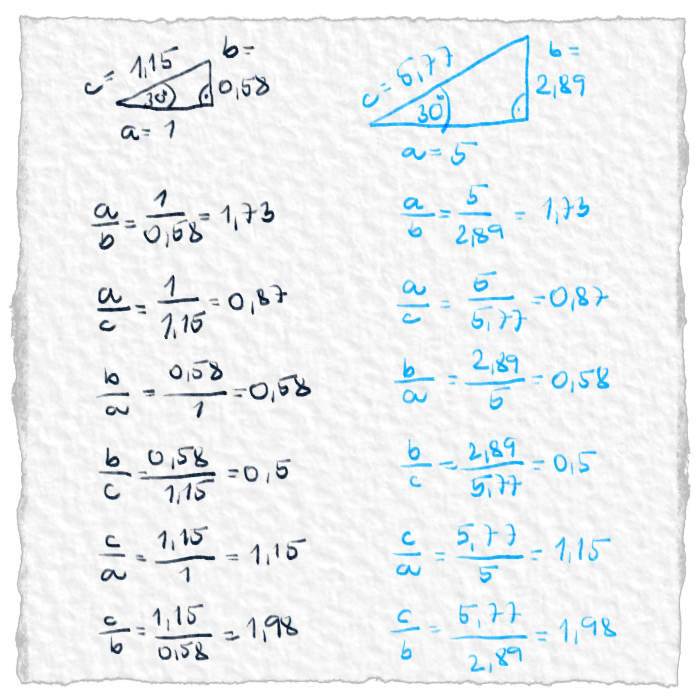

Niektoré pramene uvádzajú, že jednotkovú kružnicu poznali už v starom Babylone. Používali ju na to, aby si pre daný uhol odmerali pomery strán. Potom sa kdesi zjavila až niekedy v 18. storočí, keď už bolo treba ľuďom komplexné čísla. Pre lepšie vysvetlenie si históriu upravíme.
V článku Ako vznikla goniometria sme si písali o architektovi Raachefovi. Raachef dostal za úlohu postaviť najvyššiu pyramídu v Egypte. Najprv bolo treba zistiť, koľko meria najvyššia a potom bolo treba vypočítať, ako veľká má byť nová. Výšku pyramídy odmerať nevedel, tak pomeral, čo mohol, len zo zeme. Výšku pyramídy musel dopočítať. Zistil, že mu tam vychádzajú pravouhlé trojuholníky a našťastie objavil na nich jednu vlastnosť, ktorá ho zachránila. Pre dané uhly v trojuholníku, je pomer strán vždy rovnaký. Nezávisí od veľkosti trojuholníka.

Obr. 1.: Tu sú dva trojuholníky. Každý z nich má inú veľkosť strán, ale uhly majú rovnaké. Vyrátali sme všetkých 6 pomerov strán a ako si môžeš všimnúť, pre oba trojuholníky sú rovnaké.
Pomerov strán máme 6 a uhlov je 360. Pre každý uhol teda existuje 6 pomerov. To je spolu 2 160 čísiel. Na zapamätanie trochu veľa. Písať to na papyrus a ešte v nepozičnej sústave sa Raachefovi tiež nechcelo. Hľadal spôsob, ako by mohol mať pomery strán stále so sebou, nemusel ich mať napísané a ani zapamätané.
Ako presne prišiel na svoj objav sa nedochovalo, ale vynašiel niečo, čo dnes voláme jednotková kružnica. Tá mu poslúžila skvele, pretože si ju stačí iba nakresliť a všetky pomery strán sa dajú na nej odmerať. Neveríš?
Obr. 2.: Na jednotkovej kružnici sa dajú pravítkom odmerať všetky goniometrické funkcie (pomery strán). Farebným sú vyznačené jednotlivé pomery strán pre uhol 45°.